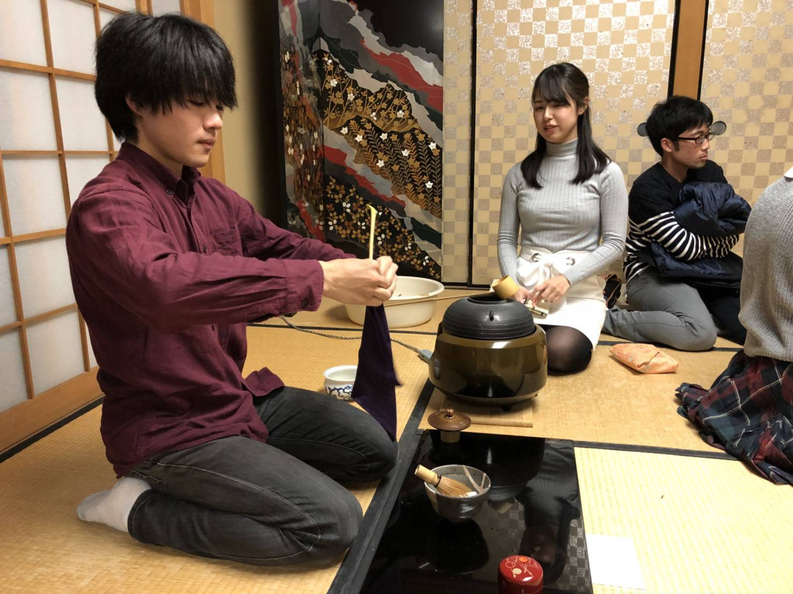
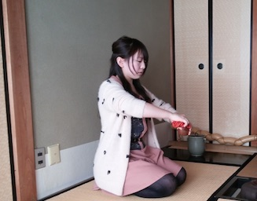

年間の活動
茶道部では一年を通して様々な活動をしています。
4月 春茶会
春茶会は毎年4月第一週の土日に開かれる医学部茶道部で最も大きなイベントで、幹部学年の集大成となるお茶会です。
お客様として総長や先生方、常々お世話になっている方々、OB/OGの皆さま、また部員の家族などをお招きしております。
新2回生が薄茶席、新3回生が一献席、新4回生が濃茶席、新5回生がOB/OG様向けのお席を作っております。
4月 新歓
4月は毎週火曜日と水曜日（2017年度）に茶道体験会として新歓を行っている他、3月末の清水寺拝観や4月上旬の新歓茶会、4月中旬のケーキバイキングなど様々なイベントを行っています！
この写真は2016年度のケーキバイキングです🎂
5月 回生練開始
5月になると新歓コンパを終え、1回生も練習が開始します。写真は練習の雰囲気です。先輩から点前座での指導と割稽古指導を受けます。
6月 ホタル狩り
6月になると1回生も練習に慣れ始めます。この頃、練習後に哲学の道周辺にホタル狩りに行きました。
※写真はイメージです
7月 海の日茶会
 7月で前期の回生練は終了です。
7月で前期の回生練は終了です。
7月の中旬には3回生が主催する部内の海の日茶会があります。2016年の海の日茶会は「銀河鉄道の夜」をテーマにしたもので、薄茶に氷を入れたり毛氈を点前部屋の中央に引いたりするなど、趣向を凝らしたお席でした♪
8月 合宿
 8月には5日間の合宿があります！関西近郊で茶道の練習ができる旅館を探し、貸切バスで出かけています。もちろん観光もします♪
8月には5日間の合宿があります！関西近郊で茶道の練習ができる旅館を探し、貸切バスで出かけています。もちろん観光もします♪
合宿で1回生は初めての席作りを体験し、お茶会のイロハを学びます。
2016年は三重県の鳥羽に、2015年は石川県の加賀に行ってきました！
9月 先生練デビュー
9月になると後期の練習が始まります。1回生も医学部茶道部がお世話になっている先生のところへ練習に行き、10月の秋茶会に備えます。
創部以来お世話になっている先生です。
10月 秋茶会
 10月下旬には春茶会に次ぐ大きなお茶会である秋茶会が開かれます。
10月下旬には春茶会に次ぐ大きなお茶会である秋茶会が開かれます。
1回生にとっては初の大きな晴れ舞台です！
11月 御礼茶事
医学部茶道部では3回生が1回生を指導しています。3回生になると、自分たちが1回生のときに指導してくださった2つ上の先輩方に感謝の意を込めて御礼茶事を行います。
茶事は茶会の正式な形態であり、なかなか体験できることではありません。数寄者を養成するとの先生のお考えにより茶事を行わせていただいております。
12月 クリスマス茶会
 12月には2回生が行う部内のクリスマス茶会があります！この時はお菓子もケーキ🍰です。
12月には2回生が行う部内のクリスマス茶会があります！この時はお菓子もケーキ🍰です。
2016年末のクリスマス茶会は「君の名は。」のパロディで、互いに入れ替わったサンタクロースとフランシスコ・ザビエルがそれぞれの使命を遂げるストーリーでした。
1月 初釜
 新年を迎えると、OB/OGの皆さまをお招きして初釜というお茶会を行います。
新年を迎えると、OB/OGの皆さまをお招きして初釜というお茶会を行います。
また、初釜では本席の他に2回生が一人ひとり自分の好きなテーマでお席を作っています。写真は2回生部員による個人席です。
2月 合宿下見
2月には茶道部として特に大きな年間行事はありません。
8月に行く合宿候補地の下見に行きます🚗
※写真は2017年合宿候補地の音羽旅館さんより
3月 お花見
 京都では3月末から桜が咲き始めます。2016年には医学部構内の芝蘭会館前で桜を見ながら優雅に野点を楽しみました♪
京都では3月末から桜が咲き始めます。2016年には医学部構内の芝蘭会館前で桜を見ながら優雅に野点を楽しみました♪